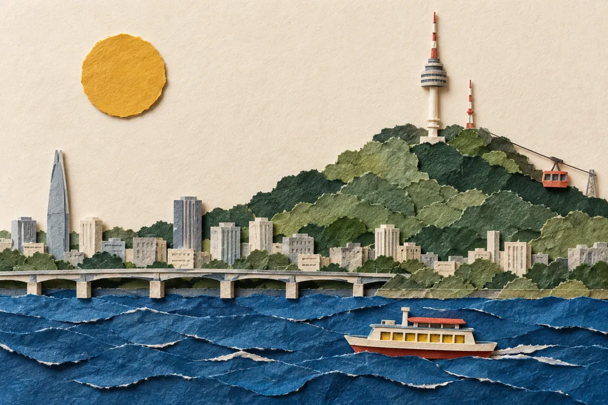

A LITTLE ESCAPE TO SEOUL
여행
작전판.
강을 따라, 불빛을 지나.
한강버스 → 노들섬 → 남산
02OCTOBER 2026
금요일 · 서울 나들이
금요일 · 서울 나들이

오늘의 여정
아직 시작 전
우리, 지금은
여행 전
내일 12:40부터 시작
내일, 가볍게 떠나요.준비물만 미리 챙겨 두세요.
🍚 점심 + 시험 끝 휴식
출발 알림은 이 화면이 열려 있을 때 알려드려요.
SEOUL
02 / THE ROUTE
10 STOPS오늘의 흐름
ONE GOOD DAY
시간은 가볍게, 하루는 느긋하게.
조금 늦어지고 있다면
고정 일정은 그대로 두고 조정해요.